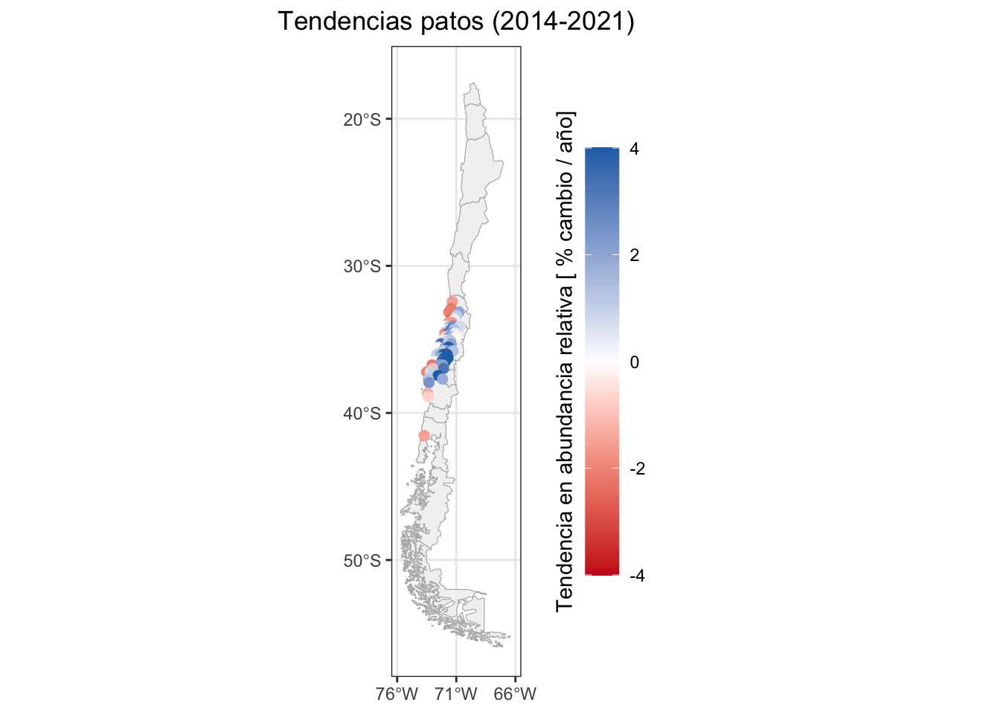

library(dplyr)
library(ebirdst)
library(exactextractr)
library(forcats)
library(ggplot2)
library(readr)
library(sf)
library(stringr)
library(terra)
library(tidyr)
library(fields)
library(rnaturalearth)4 Productos de Estados y Tendencias de eBird
El proyecto Estados y Tendencias utiliza modelos de machine learning de ciclo anual completo que combinan datos de eBird con datos de teledetección y toman en cuenta las variaciones en el comportamiento y el esfuerzo de los observadores para producir estimaciones semanales de alta resolución de los límites de distribución, la tasa de ocurrencia y la abundancia relativa de las especies de aves. La última versión, con estimaciones hasta el año 2023, incluye resultados para 2981 especies en todo el mundo, de las cuales 471 han sido registradas en Chile. Las visualizaciones interactivas de estas especies están disponibles en el sitio web de eBird Estados y Tendencias y los productos de datos de Estados y Tendencias de eBird están disponibles a través del paquete de R ebirdst.
En este modulo nos familiarizaremos con los productos de datos de Estados y Tendencias de eBird y el paquete R ebirdst, desarrollado específicamente para trabajar con estos datos. Presentaremos la gama de datos disponibles y, a continuación, les mostraremos cómo descargar estos productos de datos y cargarlos en R para su posterior análisis. Luego, trabajaremos con una serie de ejemplos de aplicaciones prácticas. Comencemos cargando los paquetes que utilizaremos a lo largo de este taller.

4.1 Data access
El acceso a los productos de Estados y Tendencias de eBird se obtiene mediante un formulario de solicitud de acceso disponible en: https://ebird.org/st/request. Las condiciones de uso se han diseñado para ser bastante permisivas en muchos casos, especialmente en lo que respecta al uso académico y de investigación. Después de leer las Condiciones de uso de los productos de estado y tendencias de eBird y rellenar el Formulario de solicitud de acceso, se le proporcionará una clave de acceso alfanumérica. Para almacenar la clave de acceso de modo que R y el paquete ebirdst puedan acceder a ella, ejecute lo siguiente (sustituyendo "XXXXXXXXX" por su clave real):
set_ebirdst_access_key("XXXXXXXXX", overwrite = TRUE)A continuación, reinicie R inmediatamente. Esto guardará la clave de acceso como variable de entorno EBIRDST_KEY en su archivo .Renviron, de modo que pueda acceder a ella desde su sesión de R.
Checkpoint
Para asegurarte de que tu clave de acceso a los datos funciona, intenta ejecutar el siguiente código, que descargará un único archivo pequeño. Si no funciona, habla con el instructor o envíanos un correo para buscar una solución al problema.
dir.create("data/ebirdst-data", recursive = TRUE, showWarnings = FALSE)
ebirdst_download_status("grbfir1", pattern = "abundance_median_3km", path = "data/ebirdst-data/", force = TRUE)4.2 Especies con Estados y Tendencias
El objeto ebirdst_runs es un data frame que enumera todas las especies disponibles:
glimpse(ebirdst_runs)
#> Rows: 2,981
#> Columns: 30
#> $ species_code <chr> "yebsap-example", "abetow", "absfin1", …
#> $ scientific_name <chr> "Sphyrapicus varius", "Melozone aberti"…
#> $ common_name <chr> "Yellow-bellied Sapsucker", "Abert's To…
#> $ is_resident <lgl> FALSE, TRUE, TRUE, FALSE, TRUE, TRUE, F…
#> $ breeding_quality <chr> "3", NA, NA, "3", NA, NA, "1", NA, NA, …
#> $ breeding_start <date> 2023-05-17, NA, NA, 2023-05-31, NA, NA…
#> $ breeding_end <date> 2023-08-16, NA, NA, 2023-08-02, NA, NA…
#> $ nonbreeding_quality <chr> "3", NA, NA, "3", NA, NA, "1", NA, NA, …
#> $ nonbreeding_start <date> 2023-11-22, NA, NA, 2023-11-22, NA, NA…
#> $ nonbreeding_end <date> 2023-03-08, NA, NA, 2023-02-22, NA, NA…
#> $ postbreeding_migration_quality <chr> "3", NA, NA, "3", NA, NA, "0", NA, NA, …
#> $ postbreeding_migration_start <date> 2023-08-23, NA, NA, 2023-08-09, NA, NA…
#> $ postbreeding_migration_end <date> 2023-11-15, NA, NA, 2023-11-15, NA, NA…
#> $ prebreeding_migration_quality <chr> "3", NA, NA, "3", NA, NA, "0", NA, NA, …
#> $ prebreeding_migration_start <date> 2023-03-15, NA, NA, 2023-03-01, NA, NA…
#> $ prebreeding_migration_end <date> 2023-05-10, NA, NA, 2023-05-24, NA, NA…
#> $ resident_quality <chr> NA, "3", "3", NA, "3", "3", NA, "2", "3…
#> $ resident_start <date> NA, 2023-01-04, 2023-01-04, NA, 2023-0…
#> $ resident_end <date> NA, 2023-12-27, 2023-12-27, NA, 2023-1…
#> $ status_version_year <dbl> 2023, 2023, 2023, 2023, 2023, 2023, 202…
#> $ has_trends <lgl> TRUE, TRUE, FALSE, TRUE, TRUE, FALSE, F…
#> $ trends_season <chr> "breeding", "resident", NA, "breeding",…
#> $ trends_region <chr> "north_america", "north_america", NA, "…
#> $ trends_start_year <dbl> 2012, 2012, NA, 2012, 2011, NA, NA, NA,…
#> $ trends_end_year <dbl> 2022, 2022, NA, 2022, 2021, NA, NA, NA,…
#> $ trends_start_date <chr> "05-24", "01-25", NA, "05-24", "11-01",…
#> $ trends_end_date <chr> "08-16", "05-10", NA, "08-02", "05-03",…
#> $ rsquared <dbl> 0.857, 0.923, NA, 0.857, 0.881, NA, NA,…
#> $ beta0 <dbl> 0.22700, -0.01392, NA, 0.68942, -0.0926…
#> $ trends_version_year <dbl> 2022, 2022, NA, 2022, 2022, NA, NA, NA,…Desde RStudio también puedes utilizar View() para explorar de forma interactiva la base de datos. También puedes consultar la página de especies en Estados y Tendencias para ver la lista completa de especies disponibles. En esta página puedes filtrar por región, por ejemplo, para ver solo aquellas especies con alguna parte de su área de distribución dentro de Chile.
En el paquete de datos proveemos una lista de las aves de Chile, el cual podemos utilizar para filtrar el objeto “ebirdst_runs” para obtener la lista de especies con productos de S&T encontrados en el país.
aves_chile <- read.csv2("data/lista aves de chile.csv")
str(aves_chile)
#> 'data.frame': 563 obs. of 14 variables:
#> $ orden_taxonomico : int 35 161 165 171 205 219 220 224 231 233 ...
#> $ codigo_eBird : chr "lesrhe2" "orntin1" "chitin1" "andtin1" ...
#> $ categoría : chr "especie" "especie" "especie" "especie" ...
#> $ orden : chr "Rheiformes" "Tinamiformes" "Tinamiformes" "Tinamiformes" ...
#> $ familia : chr "Rheidae" "Tinamidae" "Tinamidae" "Tinamidae" ...
#> $ nombre_cientifico : chr "Rhea pennata" "Nothoprocta ornata" "Nothoprocta perdicaria" "Nothoprocta pentlandii" ...
#> $ nombre_comun : chr "Suri/Ñandú" "Perdiz cordillerana" "Perdiz chilena" "Perdiz andina" ...
#> $ nombre_inglés : chr "Lesser Rhea" "Ornate Tinamou" "Chilean Tinamou" "Andean Tinamou" ...
#> $ clasificacion_IUCN: chr "LC" "LC" "LC" "LC" ...
#> $ clasificacion_RCE : chr "" "" "LC" "" ...
#> $ estado : chr "X" "X" "X(e)" "X" ...
#> $ merlin_sound : int NA NA NA NA NA NA NA NA NA 1 ...
#> $ status : int NA NA NA 1 NA NA NA 1 1 1 ...
#> $ trends : int NA NA NA NA NA NA NA NA NA 1 ...
ebirdst_runs_chile <- ebirdst_runs %>%
filter(scientific_name %in% aves_chile$nombre_cientifico) %>%
left_join(
aves_chile %>% select(nombre_cientifico, nombre_comun),
by = c("scientific_name" = "nombre_cientifico")
)
glimpse(ebirdst_runs_chile)
#> Rows: 470
#> Columns: 31
#> $ species_code <chr> "absfin1", "amekes", "ameoys", "amered"…
#> $ scientific_name <chr> "Geospizopsis plebejus", "Falco sparver…
#> $ common_name <chr> "Ash-breasted Sierra Finch", "American …
#> $ is_resident <lgl> TRUE, FALSE, FALSE, FALSE, FALSE, FALSE…
#> $ breeding_quality <chr> NA, "3", "3", "3", "3", "3", NA, NA, NA…
#> $ breeding_start <date> NA, 2023-05-17, 2023-05-10, 2023-06-14…
#> $ breeding_end <date> NA, 2023-08-02, 2023-07-26, 2023-07-19…
#> $ nonbreeding_quality <chr> NA, "3", "3", "3", "3", "3", NA, NA, NA…
#> $ nonbreeding_start <date> NA, 2023-11-15, 2023-11-22, 2023-11-29…
#> $ nonbreeding_end <date> NA, 2023-02-15, 2023-02-22, 2023-03-15…
#> $ postbreeding_migration_quality <chr> NA, "3", "3", "3", "3", "3", NA, NA, NA…
#> $ postbreeding_migration_start <date> NA, 2023-08-09, 2023-08-02, 2023-07-26…
#> $ postbreeding_migration_end <date> NA, 2023-11-08, 2023-11-15, 2023-11-22…
#> $ prebreeding_migration_quality <chr> NA, "3", "3", "3", "3", "3", NA, NA, NA…
#> $ prebreeding_migration_start <date> NA, 2023-02-22, 2023-03-01, 2023-03-22…
#> $ prebreeding_migration_end <date> NA, 2023-05-10, 2023-05-03, 2023-06-07…
#> $ resident_quality <chr> "3", NA, NA, NA, NA, NA, "2", "3", "3",…
#> $ resident_start <date> 2023-01-04, NA, NA, NA, NA, NA, 2023-0…
#> $ resident_end <date> 2023-12-27, NA, NA, NA, NA, NA, 2023-1…
#> $ status_version_year <dbl> 2023, 2023, 2023, 2023, 2023, 2023, 202…
#> $ has_trends <lgl> FALSE, TRUE, TRUE, TRUE, FALSE, FALSE, …
#> $ trends_season <chr> NA, "breeding", "breeding", "breeding",…
#> $ trends_region <chr> NA, "north_america", "north_america", "…
#> $ trends_start_year <dbl> NA, 2012, 2012, 2012, NA, NA, NA, NA, N…
#> $ trends_end_year <dbl> NA, 2022, 2022, 2022, NA, NA, NA, NA, N…
#> $ trends_start_date <chr> NA, "05-17", "05-10", "06-21", NA, NA, …
#> $ trends_end_date <chr> NA, "08-09", "07-26", "07-12", NA, NA, …
#> $ rsquared <dbl> NA, 0.877, 0.770, 0.835, NA, NA, NA, NA…
#> $ beta0 <dbl> NA, 0.891, 0.834, -0.107, NA, NA, NA, N…
#> $ trends_version_year <dbl> NA, 2022, 2022, 2022, NA, NA, NA, NA, N…
#> $ nombre_comun <chr> "Plebeyo", "Cernícalo", "Pilpilén común…4.2.1 Revisión de expertos
Todas las especies pasan por un proceso de revisión por parte de expertos humanos antes de ser publicadas. El marco de datos «ebirdst_runs» también contiene información de este proceso de revisión. Los revisores evalúan cada una de las cuatro estaciones: reproducción, no reproducción, migración previa a la reproducción y migración posterior a la reproducción. Las especies residentes (es decir, no migratorias) se identifican con el valor «TRUE» en la columna resident column of ebirdst_runs, y estas especies se evalúan a lo largo de todo el año en lugar de por temporadas. «ebirdst_runs» contiene dos datos importantes para cada estación: una calificación de calidad (quality) y fechas estacionales (seasonal dates).
Las seasonal dates definen las semanas que comprenden cada estación; las estimaciones de abundancia relativa para estas semanas se promedian para producir los mapas de abundancia relativa estacional en el sitio de Estados y Tendencias. Las fechas de la temporada reproductiva y no reproductiva se definen para cada especie como las semanas durante esas estaciones en las que la población de la especie no se desplaza. Por esta razón, estas estaciones también se describen como períodos estacionarios. Los períodos de migración se definen como los períodos de movimiento entre las temporadas estacionarias no reproductivas y reproductivas. Cabe señalar que, para muchas especies, estos períodos migratorios incluyen no solo el movimiento desde las zonas de reproducción a las zonas no reproductivas, sino también la dispersión posterior a la reproducción, la migración por muda y otros movimientos.
Los revisores también examinan las estimaciones del modelo para cada temporada con el fin de evaluar el grado de extrapolación u omisión presente en el modelo, y asignan una calificación de calidad asociada que va de 0 (calidad más baja) a 3 (calidad más alta). La extrapolación se refiere a los casos en los que el modelo predice la presencia de una especie cuando se sabe que está ausente, mientras que la omisión se refiere a los casos en los que el modelo no predice la presencia de una especie cuando se sabe que está presente.
Una calificación de 0 implica que esta temporada no ha superado la revisión y que los resultados del modelo no deben utilizarse en absoluto para este período. Las calificaciones de 1 a 3 corresponden a un gradiente de mayor a menor extrapolación y/u omisión, y a menudo utilizamos una analogía con los semáforos para referirnos a ellas:
- Luz roja (1): baja calidad, extrapolación y/u omisión extensas y ruido, pero al menos algunas regiones tienen estimaciones precisas; se puede utilizar con precaución en determinadas regiones.
- Luz amarilla (2): calidad media, cierta extrapolación y/u omisión; utilizar con precaución.
- Luz verde (3): calidad alta, muy poca o ninguna extrapolación y/u omisión; estas temporadas se pueden utilizar con seguridad.
4.3 Descarga de datos
La función ebirdst_download_status() descarga datos de una sola especie a partir del nombre de la especie (nombre común, nombre científico o código de especie). Por ejemplo, para descargar los datos del Picaflor chico, utilice:
path <- ebirdst_download_status(species = "Sephanoides sephaniodes", path = "data/ebirdst-data")
path#> [1] "data/ebirdst-data/2023/grbfir1"La función identificará automáticamente una ubicación adecuada para almacenar los datos descargados y devolverá esa ruta, que hemos capturado en la variable path. Podemos ver qué archivos se han descargado con:
list.files(path, recursive = TRUE)
#> [1] "config.json"
#> [2] "seasonal/grbfir1_abundance_full-year_max_27km_2023.tif"
#> [3] "seasonal/grbfir1_abundance_full-year_max_3km_2023.tif"
#> [4] "seasonal/grbfir1_abundance_full-year_max_9km_2023.tif"
#> [5] "seasonal/grbfir1_abundance_full-year_mean_27km_2023.tif"
#> [6] "seasonal/grbfir1_abundance_full-year_mean_3km_2023.tif"
#> [7] "seasonal/grbfir1_abundance_full-year_mean_9km_2023.tif"
#> [8] "seasonal/grbfir1_abundance_seasonal_max_27km_2023.tif"
#> [9] "seasonal/grbfir1_abundance_seasonal_max_3km_2023.tif"
#> [10] "seasonal/grbfir1_abundance_seasonal_max_9km_2023.tif"
#> [11] "seasonal/grbfir1_abundance_seasonal_mean_27km_2023.tif"
#> [12] "seasonal/grbfir1_abundance_seasonal_mean_3km_2023.tif"
#> [13] "seasonal/grbfir1_abundance_seasonal_mean_9km_2023.tif"
#> [14] "seasonal/grbfir1_proportion-population_seasonal_mean_27km_2023.tif"
#> [15] "seasonal/grbfir1_proportion-population_seasonal_mean_3km_2023.tif"
#> [16] "seasonal/grbfir1_proportion-population_seasonal_mean_9km_2023.tif"
#> [17] "weekly/grbfir1_abundance_lower_27km_2023.tif"
#> [18] "weekly/grbfir1_abundance_lower_3km_2023.tif"
#> [19] "weekly/grbfir1_abundance_lower_9km_2023.tif"
#> [20] "weekly/grbfir1_abundance_median_27km_2023.tif"
#> [21] "weekly/grbfir1_abundance_median_3km_2023.tif"
#> [22] "weekly/grbfir1_abundance_median_9km_2023.tif"
#> [23] "weekly/grbfir1_abundance_upper_27km_2023.tif"
#> [24] "weekly/grbfir1_abundance_upper_3km_2023.tif"
#> [25] "weekly/grbfir1_abundance_upper_9km_2023.tif"
#> [26] "weekly/grbfir1_proportion-population_median_27km_2023.tif"
#> [27] "weekly/grbfir1_proportion-population_median_3km_2023.tif"
#> [28] "weekly/grbfir1_proportion-population_median_9km_2023.tif"Dentro de este directorio de paquetes de datos, los archivos están organizados según la siguiente estructura:
weekly/: un directorio que contiene estimaciones semanales de ocurrencia, conteo, abundancia relativa y proporción de población en una cuadrícula regular en formato GeoTIFF con tres resoluciones. Ver más abajo para obtener más detalles.seasonal/: un directorio que contiene estimaciones estacionales de ocurrencia, conteo, abundancia relativa y proporción de población en una cuadrícula regular en formato GeoTIFF con tres resoluciones. Estas se derivan de los datos ráster semanales correspondientes. Las fechas que definen los límites de cada estación se establecen en función de cada especie por un revisor experto familiarizado con la misma. Estas fechas están disponibles en el marco de datos ebirdst_runs. Solo se incluyen las estaciones que han superado el proceso de revisión por expertos. Ver más abajo para obtener más detalles.ranges/: un directorio que contiene GeoPackages que almacenan polígonos de límites de distribución. Ver más abajo para obtener más detalles.config.json: parámetros específicos de la ejecución, principalmente para uso interno, pero que también contienen parámetros útiles para cartografiar los datos de abundancia.
Tip
Los datos espaciales se dividen en dos grandes categorías: datos ráster y datos vectoriales. Los datos ráster representan los datos espaciales como una cuadrícula regular de celdas con un valor o conjunto de valores asignados a cada una. Los datos vectoriales representan los datos espaciales como puntos, líneas o polígonos discretos. En los productos de datos de eBird Status, los datos ráster se distribuyen como GeoTIFF, mientras que los datos vectoriales se distribuyen como GeoPackages.
Para una especie cuyos datos ya se han descargado, puede utilizar get_species_path("Sephanoides sephaniodes") para identificar la ruta de acceso a los datos.
4.3.1 Descarga de archivos específicos
El paquete completo de datos de cada especie contiene un gran número de archivos, muchos de los cuales pueden ser innecesarios para su aplicación. Puede utilizar el argumento dry_run = TRUE en ebirdst_download() para obtener una lista de los archivos disponibles sin descargarlos.
ebirdst_download_status("Sephanoides sephaniodes", dry_run = TRUE)Una vez identificados los archivos que desea, puede utilizar el argumento pattern para descargar solo esos archivos. Por ejemplo, imaginemos que solo queremos los archivos abundance:
ebirdst_download_status("Sephanoides sephaniodes", pattern = "abundance", path = "data/ebirdst-data/")4.4 Cargando datos en R
En este curso, nos centraremos en los productos de datos ráster, que se pueden cargar en R utilizando la función load_raster() de ebirdst. En R, utilizaremos el paquete terra para trabajar con datos ráster. Los productos de datos ráster se dividen en dos grandes categorías que proporcionan estimaciones semanales y estacionales.
4.4.1 Estimaciones semanales ráster
Los productos básicos de datos ráster son las estimaciones semanales de presencia, conteo, abundancia relativa y proporción de población. Todas las estimaciones son el valor medio esperado para un listado con desplazamiento de eBird de 1 km y 1 hora realizado por un observador experto en el momento óptimo del día y en las condiciones meteorológicas óptimas para observar la especie en cuestión.
- Ocurrencia
occurrence: la probabilidad esperada de encontrar una especie. - Conteo
count: el conteo esperado de una especie, condicionado a su ocurrencia en la ubicación dada. - Abundancia relativa
abundance: la abundancia relativa esperada de una especie, calculada como el producto de la probabilidad de ocurrencia y el conteo condicionado a la ocurrencia. Además de la abundancia relativa mediana, se proporcionan intervalos de confianza (IC) superiores e inferiores, definidos en el decil 10 y el decil 90 de la abundancia relativa, respectivamente. - Proporción de población
proportion-population: la proporción de la abundancia relativa total dentro de cada celda. Se trata de un producto derivado que se calcula dividiendo cada valor de celda de abundancia relativa del ráster por la suma de todos los valores de celda.
Todas las predicciones se realizan en una cuadrícula global estándar de 2,96 km x 2,96 km; sin embargo, también se proporcionan archivos GeoTIFF de menor resolución, que suelen ser mucho más rápidos de manejar. Las tres resoluciones son:
- Alta resolución (
3km): datos con una resolución nativa de 2,96 km. - Resolución media (
9km): datos3kmagregados por un factor de 3 en cada dirección, lo que da como resultado una resolución de 8,89 km. - Baja resolución (
27km): datos3kmagregados por un factor de 9 en cada dirección, lo que da como resultado una resolución de 26,7 km.
Los archivos semanales utilizan la siguiente convención de nomenclatura:
weekly/<species_code>_<product>_<metric>_<resolution>_<year>.tif
donde metric suele ser median, excepto en los IC de abundancia relativa, que utilizan lower y upper. La función load_raster() se utiliza para cargar estos datos en R y toma argumentos para product, metric y resolution. Por ejemplo, para cargar la abundancia relativa mediana de alta resolución, utilice:
abd_median_3km <- load_raster(species = "grbfir1",
path = "data/ebirdst-data/",
product = "abundance",
period = "weekly",
metric = "median",
resolution = "3km")
print(abd_median_3km)
#> class : SpatRaster
#> dimensions : 5562, 11484, 52 (nrow, ncol, nlyr)
#> resolution : 3000, 3000 (x, y)
#> extent : -17226000, 17226000, -8343000, 8343000 (xmin, xmax, ymin, ymax)
#> coord. ref. : WGS 84 / Equal Earth Greenwich (EPSG:8857)
#> source : grbfir1_abundance_median_3km_2023.tif
#> names : 2023-01-04, 2023-01-11, 2023-01-18, 2023-01-25, 2023-02-01, 2023-02-08, ...
#> min values : 0.00, 0.00, 0.00, 0.0, 0.00, 0.00, ...
#> max values : 4.09, 4.97, 4.53, 3.9, 3.76, 4.41, ...A menudo nos referimos a estos objetos ráster como cubos semanales (por ejemplo, el cubo de abundancia semanal). Obsérvese que los cubos contienen 52 capas, que corresponden a las semanas del año. Los nombres de las capas son las fechas asociadas al punto medio de cada semana.
as.Date(names(abd_median_3km))
#> [1] "2023-01-04" "2023-01-11" "2023-01-18" "2023-01-25" "2023-02-01"
#> [6] "2023-02-08" "2023-02-15" "2023-02-22" "2023-03-01" "2023-03-08"
#> [11] "2023-03-15" "2023-03-22" "2023-03-29" "2023-04-05" "2023-04-12"
#> [16] "2023-04-19" "2023-04-26" "2023-05-03" "2023-05-10" "2023-05-17"
#> [21] "2023-05-24" "2023-05-31" "2023-06-07" "2023-06-14" "2023-06-21"
#> [26] "2023-06-28" "2023-07-05" "2023-07-12" "2023-07-19" "2023-07-26"
#> [31] "2023-08-02" "2023-08-09" "2023-08-16" "2023-08-23" "2023-08-30"
#> [36] "2023-09-06" "2023-09-13" "2023-09-20" "2023-09-27" "2023-10-04"
#> [41] "2023-10-11" "2023-10-18" "2023-10-25" "2023-11-01" "2023-11-08"
#> [46] "2023-11-15" "2023-11-22" "2023-11-29" "2023-12-06" "2023-12-13"
#> [51] "2023-12-20" "2023-12-27"Como otro ejemplo, podríamos cargar los intervalos de confianza de abundancia superior e inferior de baja resolución.
abd_lower_27km <- load_raster(species = "grbfir1",
path = "data/ebirdst-data/",
product = "abundance",
metric = "lower",
period = "weekly",
resolution = "27km")
abd_upper_27km <- load_raster(species = "grbfir1",
path = "data/ebirdst-data/",
product = "abundance",
metric = "upper",
period = "weekly",
resolution = "27km")4.4.2 Rásters de estimaciones estacionales
Los rásters de estimaciones estacionales se proporcionan para el mismo conjunto de productos y con las mismas tres resoluciones que las estimaciones semanales. Se obtienen a partir de los datos semanales tomando la media o el máximo por celda a lo largo de las semanas de cada estación. Recuerde que las fechas límite estacionales están disponibles en ebirdst_runs; no se proporcionan datos para las estaciones con una puntuación de calidad de 0.
Los GeoTIFF estacionales utilizan la siguiente convención de nomenclatura:
seasonal/<species_code>_<product>_seasonal_<metric>_<resolution>_<year>.tif
donde metric es mean o max. La función load_raster(period = "seasonal") se utiliza para cargar estos datos en R y toma argumentos para product, metric y resolution. Por ejemplo, para cargar la abundancia relativa estacional media de baja resolución, utilice:
abd_seasonal_mean <- load_raster(species = "grbfir1",
path = "data/ebirdst-data/",
product = "abundance",
period = "seasonal",
metric = "mean",
resolution = "27km")
print(abd_seasonal_mean)
#> class : SpatRaster
#> dimensions : 618, 1276, 4 (nrow, ncol, nlyr)
#> resolution : 27000, 27000 (x, y)
#> extent : -17226000, 17226000, -8343000, 8343000 (xmin, xmax, ymin, ymax)
#> coord. ref. : WGS 84 / Equal Earth Greenwich (EPSG:8857)
#> source : grbfir1_abundance_seasonal_mean_27km_2023.tif
#> names : breeding, nonbreeding, prebree~gration, postbre~gration
#> min values : 0.00, 0.00, 0.00, 0.0
#> max values : 3.28, 4.89, 2.47, 5.3Observe que hay cuatro capas en este ráster que corresponden a las cuatro estaciones.
names(abd_seasonal_mean)
#> [1] "breeding" "nonbreeding" "prebreeding_migration"
#> [4] "postbreeding_migration"Por último, para mayor comodidad, los productos de datos incluyen rásteres anuales que resumen la media o el máximo de todas las semanas que caen dentro de una estación que ha superado el proceso de revisión por expertos. Se puede acceder a ellos de forma similar a los productos estacionales, solo que con «period = “full-year”» en lugar de «period = “week”». Por ejemplo, estas capas se pueden utilizar en la planificación de la conservación para evaluar los sitios más importantes en todo el área de distribución y el ciclo anual completo de una especie.
abd_fy_max <- load_raster(species = "grbfir1",
path = "data/ebirdst-data/",
product = "abundance",
period = "full-year",
metric = "max",
resolution = "3km")4.5 Explorando los datos ráster
Carguemos los ráster de abundancia relativa semanal y estacional de baja resolución y utilicémoslos para demostrar algunas operaciones ráster básicas con los datos.
abd_weekly <- load_raster(species = "grbfir1",
path = "data/ebirdst-data/",
product = "abundance",
resolution = "27km")
abd_seasonal <- load_raster(species = "grbfir1",
path = "data/ebirdst-data/",
product = "abundance",
period = "seasonal",
resolution = "27km")Estos ráster se pueden dividir fácilmente en subconjuntos de una sola semana o temporada.
# week of may 17
abd_weekly[["2023-05-17"]]
#> class : SpatRaster
#> dimensions : 618, 1276, 1 (nrow, ncol, nlyr)
#> resolution : 27000, 27000 (x, y)
#> extent : -17226000, 17226000, -8343000, 8343000 (xmin, xmax, ymin, ymax)
#> coord. ref. : WGS 84 / Equal Earth Greenwich (EPSG:8857)
#> source : grbfir1_abundance_median_27km_2023.tif
#> name : 2023-05-17
#> min value : 0.00
#> max value : 5.49
# breeding season
abd_seasonal[["breeding"]]
#> class : SpatRaster
#> dimensions : 618, 1276, 1 (nrow, ncol, nlyr)
#> resolution : 27000, 27000 (x, y)
#> extent : -17226000, 17226000, -8343000, 8343000 (xmin, xmax, ymin, ymax)
#> coord. ref. : WGS 84 / Equal Earth Greenwich (EPSG:8857)
#> source : grbfir1_abundance_seasonal_mean_27km_2023.tif
#> name : breeding
#> min value : 0.00
#> max value : 3.28También podemos dividir el ráster semanal en un rango de semanas. Por ejemplo, dividamos solo las estimaciones de las semanas de mayo y luego calculemos el promedio de todas las semanas.
# determine qué fechas podemos incluir
week_dates <- as.Date(names(abd_weekly))
start_date <- as.Date("2023-05-01")
end_date <- as.Date("2023-05-31")
week_in_may <- week_dates >= start_date & week_dates <= end_date
# subset a las semanas de mayo
abd_weekly_may <- abd_weekly[[week_in_may]]
# promedio semanal
mean(abd_weekly_may, na.rm = TRUE)
#> class : SpatRaster
#> dimensions : 618, 1276, 1 (nrow, ncol, nlyr)
#> resolution : 27000, 27000 (x, y)
#> extent : -17226000, 17226000, -8343000, 8343000 (xmin, xmax, ymin, ymax)
#> coord. ref. : WGS 84 / Equal Earth Greenwich (EPSG:8857)
#> source(s) : memory
#> name : mean
#> min value : 0.00
#> max value : 5.34Crear un mapa sencillo con los datos producirá resultados inesperados. Por ejemplo, vamos a trazar un mapa de la abundancia relativa durante la temporada de reproducción del Picaflro chico.
plot(abd_seasonal[["breeding"]])Recuerda que todos los productos de datos de eBird Status se proporcionan para todo el mundo, independientemente del área de distribución de las especies. Además, tenga en cuenta que algunas zonas, como la mayor parte de la cuenca del Amazonas, tienen valores faltantes, lo que indica que no se disponía de datos suficientes para hacer una predicción en la región. Otras zonas, como América del Norte, contaban con datos suficientes para predecir que la especie está ausente. Probemos a utilizar los datos SIG incluidos en el paquete de datos del curso para recortar el ráster a la región de Los Lagos y crear un mapa más significativo.
# Límite de Los Lagos, proyectado para coincidir con los datos ráster.
los_lagos <- read_sf("data/gis-data.gpkg", layer = "ne_states") %>%
filter(state == "Los Lagos") %>%
st_transform(crs = crs(abd_seasonal)) %>%
st_geometry()
# Recortar datos ráster a Chile
abd_breeding_ll <- crop(abd_seasonal[["breeding"]], los_lagos)
# mapear
plot(abd_breeding_ll)
plot(los_lagos, add = TRUE)
Checkpoint
Hagamos una pausa antes de continuar con algunas aplicaciones más realistas de los productos de datos de eBird Status. Asegúrate de que te sientes cómodo cargando los datos en R y realizando algunas de las operaciones básicas.
4.6 Aplicaciones de productos S&T
Ahora trabajaremos algunos ejemplos de aplicaciones prácticas utilizando los productos de Estados y Tendencias.
- Trayectorias: visualiza el cambio en la proporción de la población de un grupo de especies en una región determinada a lo largo del año.
- Estadísticas regionales: calcula la proporción de la población reproductiva presente en áreas protegidas para un grupo de especies.
- Priorización: us los productos de Estados para identificas áreas de importancia para la protección de un grupo de especies.
4.6.1 Trayectorias
En este ejercicio, analizaremos el cambio en las poblaciones de dos especies a lo largo del año en la región de Los Lagos. Consideraremos el Picaflor chico y la Viudita, dos especies migratorias que son casi endémicas de Chile. Al comparar varias especies, o una sola especie entre diferentes estaciones, como es el caso aquí, es importante tener en cuenta la proporción de la población en lugar de la abundancia relativa para mitigar el impacto de las diferencias en la detectabilidad entre estaciones y especies.
Comencemos cargando los datos de proporción de población semanal de resolución media para estas especies, así como un polígono límite para Los Lagos.
# datos de proporción de la población
pop_grbfir1 <- load_raster(species = "grbfir1",
path = "data/ebirdst-data/",
product = "proportion-population",
metric = "median",
resolution = "9km")
ebirdst_download_status("Patagonian Tyrant", path = "data/ebirdst-data/")
pop_pattyr2 <- load_raster(species = "pattyr2",
path = "data/ebirdst-data/",
product = "proportion-population",
metric = "median",
resolution = "9km")
# límite de Los Lagos proyectado a la misma proyección de los datos ráster
los_lagos <- read_sf("data/gis-data.gpkg", "ne_states") %>%
filter(state == "Los Lagos") %>%
st_transform(crs = crs(pop_grbfir1)) %>%
st_geometry()Ahora utilizaremos el paquete exactextractr para calcular la suma de las proporciones de cada especies en Los Lagos.
# suma dentro de los lagos
# picaflor chico
tray_grbfir1 <- exact_extract(pop_grbfir1, los_lagos, fun = "sum")
tray_grbfir1 <- data.frame(species = "Green-backed Firecrown",
week = as.Date(names(pop_grbfir1)),
prop_pop = as.numeric(tray_grbfir1[1, ]))
# viudita
tray_pattyr2 <- exact_extract(pop_pattyr2, los_lagos, fun = "sum")
tray_pattyr2 <- data.frame(species = "Patagonian Tyrant",
week = as.Date(names(pop_pattyr2)),
prop_pop = as.numeric(tray_pattyr2[1, ]))
# combinar
trayectorias <- bind_rows(tray_grbfir1, tray_pattyr2)
head(trayectorias)
#> species week prop_pop
#> 1 Green-backed Firecrown 2023-01-04 0.244
#> 2 Green-backed Firecrown 2023-01-11 0.230
#> 3 Green-backed Firecrown 2023-01-18 0.256
#> 4 Green-backed Firecrown 2023-01-25 0.244
#> 5 Green-backed Firecrown 2023-02-01 0.243
#> 6 Green-backed Firecrown 2023-02-08 0.238Finally we can plot the trajectories.
ggplot(trayectorias, aes(x = week, y = prop_pop, color = species)) +
geom_line() +
scale_y_continuous(labels = scales::percent) +
labs(x = "Semana",
y = "% de población",
title = "Trayectorias de % semanal de la proporción de la población en Los Lagos",
color = NULL) +
theme(legend.position = "bottom")4.6.2 Estadísticas regionales
Para este ejercicio calcularemos la proporción de la población dentro de areas protegidas en Chile para un grupo de especies. Como un ejemplo de grupo de especies usaremos 10 especies endémicas o casi endémicas de Chile. Para las especies que sean migratorias nos enfocaremos en la temporada reproductiva.
lista_especies <- c("cthhue1", "chipig2", "chimoc1", "crachi1", "chutap1",
"slbpar1", "chitin1", "whttap1", "moutur1", "dutcan1")
# descargar datos para el grupo de especies
for (i in 1:length(lista_especies)){
ebirdst_download_status(lista_especies[i], path = "data/ebirdst-data/", pattern = "proportion-population_seasonal_mean_9km")
}
# agregar nombre común, residente/migratoria y calidad
lista_especies <- filter(ebirdst_runs, species_code %in% lista_especies) %>%
mutate(quality = ifelse(is_resident, resident_quality, breeding_quality)) %>%
dplyr::select(species_code, common_name, is_resident, quality)
print(lista_especies)
#> # A tibble: 10 × 4
#> species_code common_name is_resident quality
#> <chr> <chr> <lgl> <chr>
#> 1 chimoc1 Chilean Mockingbird TRUE 3
#> 2 chipig2 Chilean Pigeon FALSE 3
#> 3 chitin1 Chilean Tinamou TRUE 3
#> 4 chutap1 Chucao Tapaculo TRUE 3
#> 5 crachi1 Crag Chilia TRUE 2
#> 6 cthhue1 Chestnut-throated Huet-huet TRUE 2
#> # ℹ 4 more rowsTenemos dos especies migratorias y ocho residentes. Observe que 0 de estas especies tienen una calificación de calidad de 1, lo que indica que se debe tener precaución al utilizar los resultados. Para su uso en el mundo real, debe examinar los mapas de abundancia relativa en busca de errores antes de utilizarlos para el análisis; sin embargo, para este ejemplo, utilizaremos esta lista de especies tal cual. Cargaremos y combinaremos los porcentajes de población reproductora (para las migratorias) y residente (para las residentes) de esta lista de especies.
Tip
Las estimaciones de abundancia relativa se ven afectadas por las tasas de detección, que pueden variar entre especies. Por lo tanto, al comparar los datos entre especies, es fundamental utilizar siempre las capas de proporción de población, que se han estandarizado dividiendo el valor de cada celda por la abundancia relativa total de todas las celdas.
# loop over the species list extracting the seasonal percent of population
proporcion_poblacion <- list()
for (i in seq_len(nrow(lista_especies))) {
# load the seasonal cube for this species
this_species <- lista_especies[i, ]
pop <- load_raster(this_species$species_code,
path = "data/ebirdst-data",
product = "proportion-population",
period = "seasonal",
resolution = "9km")
# subset to the layer we need: breeding or resident
pop <- pop[[ifelse(this_species$is_resident, "resident", "breeding")]]
proporcion_poblacion[[this_species$species_code]] <- pop
}
# stack the rasters into a single object
proporcion_poblacion <- rast(proporcion_poblacion)Los datos SIG disponibles en el paquete de datos del taller contienen límites poligonales de las áreas protegidas públicas de Chile. Vamos a cargarlos ahora y proyectarlos para que coincidan con las capas ráster. Para este ejemplo, combinaremos todos los polígonos de las áreas protegidas en una sola característica; sin embargo, este análisis podría modificarse para tener en cuenta cómo varía la distribución de las especies entre las áreas protegidas.
protegido <- read_sf("data/gis-data.gpkg", layer = "protected_areas") %>%
st_combine() %>%
st_transform(crs = crs(proporcion_poblacion))Finally, we can use exactextracr to calculate the total percent of population within protected areas for each species.
porcentaje_protegido <- exact_extract(proporcion_poblacion, protegido, fun = "sum")
porcentaje_protegido <- as.numeric(porcentaje_protegido[1, ])
porcentaje_protegido <- data.frame(species_code = lista_especies$species_code,
common_name = lista_especies$common_name,
proporcion_poblacion = porcentaje_protegido) %>%
arrange(desc(proporcion_poblacion))
print(porcentaje_protegido)
#> species_code common_name proporcion_poblacion
#> 1 chutap1 Chucao Tapaculo 0.16700
#> 2 chipig2 Chilean Pigeon 0.06149
#> 3 cthhue1 Chestnut-throated Huet-huet 0.02409
#> 4 whttap1 White-throated Tapaculo 0.01827
#> 5 moutur1 Moustached Turca 0.01618
#> 6 dutcan1 Dusky-tailed Canastero 0.01558
#> 7 slbpar1 Slender-billed Parakeet 0.01450
#> 8 crachi1 Crag Chilia 0.01301
#> 9 chimoc1 Chilean Mockingbird 0.00794
#> 10 chitin1 Chilean Tinamou 0.00696
# plotear los datos
ggplot(porcentaje_protegido) +
aes(x = fct_reorder(common_name, proporcion_poblacion),
y = proporcion_poblacion) +
geom_col() +
scale_y_continuous(labels = scales::percent) +
labs(x = NULL, y = "Proporción de la población en áreas protegidas") +
coord_flip()
4.6.3 Priorización
Para el ejercicio final, realizaremos una priorización de sitios multiespecíficos, identificando sitios importantes para proteger el conjunto de 10 especies casi endémicas que identificamos en el ejercicio anterior. Comencemos por generar una capa de importancia multiespecífica calculando el porcentaje medio de población de las 10 especies. Dado que nos centramos en identificar sitios en Chile, también recortaremos y enmascararemos la capa de importancia dentro de los límites de Chile.
# límite territorio chileno
chile <- read_sf("data/gis-data.gpkg", layer = "ne_states") %>%
filter(country_code == "CL") %>%
st_transform(crs = crs(proporcion_poblacion))
# importancia: porcentaje promedio de proporción de la población entre especies
# rellenar valores faltantes con ceros antes de promediar
importancia <- ifel(is.na(proporcion_poblacion), 0, proporcion_poblacion) %>%
mean(na.rm = TRUE) %>%
# recortar y enmascarar a límite chileno
crop(chile) %>%
mask(chile)
#>
|---------|---------|---------|---------|
=========================================
|---------|---------|---------|---------|
=========================================
|---------|---------|---------|---------|
=========================================
|---------|---------|---------|---------|
=========================================
|---------|---------|---------|---------|
=========================================
|---------|---------|---------|---------|
=========================================
# plotear la raíz cuadrada de la importancia, ya que los datos están sesgados hacia la derecha.
par(mar = c(0.25, 0.25, 0.25, 0.25))
crs <- "+proj=laea +lat_0=-40 +lon_0=-72"
r_plot <- sqrt(importancia) %>%
project(crs, method = "near") %>%
trim()
plot(r_plot, axes = FALSE)
Los números absolutos de este mapa son difíciles de interpretar (son la proporción media de la población de las 10 especies en cada celda). En cambio, los valores deben interpretarse en términos relativos, dando la importancia relativa de cada celda para este conjunto de 10 especies.
En la aplicación anterior, examinamos las áreas protegidas públicas existentes. Para efectos comparativos, imaginemos que queremos identificar los sitios más importantes de Chile que cubren la misma superficie que la red de áreas protegidas existente. ¿Qué proporción de Chile cubre la red actual de áreas protegidas?
# proporción de Chile en red existente de áreas protegidas
area_chile <- sum(st_area(chile))
area_protegida <- st_area(protegido)
proporcion_protegido <- as.numeric(area_protegida / area_chile)
print(proporcion_protegido)
#> [1] 0.208Entonces, 20.8% de Chile está cubierto por la red existente de áreas protegidas públicas. Identifiquemos el 20.8% de celdas más importantes desde la capa de importancia multiespecies.
# indentificar el quantil correspondiente al nivel de protección deseado
q <- global(importancia, fun = quantile,
probs = 1 - proporcion_protegido, na.rm = TRUE) %>%
as.numeric()
# identificar las celdas más importantes
sitios_seleccionados <- as.numeric(importancia >= q)Comparemos loa mapas de la red existente de áreas protegidas y las seleccionadas usando Estados y Tendencias.
par(mar = c(0.25, 0.25, 0.25, 0.25))
# importancia alta
r_plot <- project(sitios_seleccionados, crs, method = "near") %>%
trim()
proy_protegido <- st_transform(protegido, crs = crs) %>%
st_geometry()
plot(r_plot, axes = FALSE, legend = FALSE)
# existente
plot(st_simplify(proy_protegido),
col = "grey50", border = NA,
add = TRUE)
Los sitios de alta importancia que identificamos se muestran en verde, mientras que la red de áreas protegidas existente se superpone en gris. Vemos que la red de áreas protegidas existente se encuentra principalmente en el sur de Chile y que hay una superposición limitada con las áreas de alta importancia para las 10 especies casi endémicas en las que decidimos centrarnos. Esto no es sorprendente, ya que la ubicación de las áreas protegidas existentes no se eligió específicamente para proteger estas 10 especies. Cuantifiquemos qué proporción de la población capturan estas dos regiones.
# enmascarar las capas de proporción de población por los sitios seleccionados
pp_seleccionados <- proporcion_poblacion %>%
crop(sitios_seleccionados) %>%
mask(sitios_seleccionados, maskvalues = c(0, NA))
# calcular el porcentaje total de población dentro de los sitios propuestos
porcentaje_seleccionados <- global(pp_seleccionados, fun = "sum", na.rm = TRUE)
porcentaje_seleccionados <- data.frame(species_code = names(pp_seleccionados),
porcentaje_seleccionados = porcentaje_seleccionados[, 1])
# combinar con los valores de la red existente
comparasion <- inner_join(porcentaje_protegido, porcentaje_seleccionados,
by = "species_code") %>%
rename(existing_network = proporcion_poblacion,
prioritized_sites = porcentaje_seleccionados) %>%
pivot_longer(cols = c(existing_network, prioritized_sites),
names_to = "network_type",
values_to = "proporcion_poblacion")
ggplot(comparasion) +
aes(x = fct_reorder(common_name, proporcion_poblacion, .fun = max),
y = proporcion_poblacion,
group = network_type,
fill = network_type) +
geom_col(position = "dodge") +
scale_y_continuous(labels = scales::percent) +
scale_fill_brewer(palette = "Set1") +
labs(x = NULL,
y = "Proporción de población en áreas protegidas",
fill = NULL) +
coord_flip() +
theme_linedraw() +
theme(legend.position = "bottom")
Por lo tanto, para una misma superficie total, podríamos capturar una proporción mucho mayor de las poblaciones de estas especies si utilizáramos los productos de datos de eBird Status para estas especies en nuestra priorización de sitios. Por supuesto, este ejemplo es demasiado simplista. Por ejemplo, en una aplicación real, los diferentes sitios tienen diferentes costos asociados a la protección y habría que tenerlo en cuenta a la hora de establecer las prioridades. Para problemas de priorización más complejos, se pueden utilizar eficazmente herramientas de planificación sistemática de la conservación, como el paquete R prioritizr, junto con los productos de datos de Estados de eBird.
5 Tendencias
Los productos de datos de tendencias de eBird proporcionan estimaciones de las tendencias en la abundancia relativa basadas en los datos de eBird. Las estimaciones de las tendencias se realizan en una grilla de 27 x 27 km para una sola temporada por especie (reproductora, no reproductora o residente). Para obtener más detalles sobre la metodología utilizada para estimar estas tendencias, consulte este artículo.
ebirdst_runs indica qué especies tienen estimaciones de tendencias con la columna has_trends. Podemos filtrar el marco de datos y seleccionar solo aquellas columnas relevantes para las tendencias.
trends_runs <- ebirdst_runs |>
filter(has_trends) |>
select(species_code, common_name, scientific_name,
trends_season, trends_region,
trends_start_year, trends_end_year,
trends_start_date, trends_end_date,
rsquared, beta0, trends_version_year)
glimpse(trends_runs)
#> Rows: 842
#> Columns: 12
#> $ species_code <chr> "yebsap-example", "abetow", "acafly", "acowoo", "a…
#> $ common_name <chr> "Yellow-bellied Sapsucker", "Abert's Towhee", "Aca…
#> $ scientific_name <chr> "Sphyrapicus varius", "Melozone aberti", "Empidona…
#> $ trends_season <chr> "breeding", "resident", "breeding", "resident", "b…
#> $ trends_region <chr> "north_america", "north_america", "north_america",…
#> $ trends_start_year <dbl> 2012, 2012, 2012, 2011, 2012, 2015, 2012, 2011, 20…
#> $ trends_end_year <dbl> 2022, 2022, 2022, 2021, 2022, 2022, 2022, 2021, 20…
#> $ trends_start_date <chr> "05-24", "01-25", "05-24", "11-01", "06-21", "07-2…
#> $ trends_end_date <chr> "08-16", "05-10", "08-02", "05-03", "07-12", "12-0…
#> $ rsquared <dbl> 0.857, 0.923, 0.857, 0.881, 0.787, 0.820, 0.909, 0…
#> $ beta0 <dbl> 0.22700, -0.01392, 0.68942, -0.09267, -0.16241, 0.…
#> $ trends_version_year <dbl> 2022, 2022, 2022, 2022, 2022, 2022, 2022, 2022, 20…Se proporciona información sobre el modelo de tendencias para cada especie, incluidas dos métricas de rendimiento predictivo (rsquared y beta0) que se basan en una comparación de las tendencias reales y estimadas para un conjunto de simulaciones (véase Fink et al. 2023 para más detalles). Las columnas del marco de datos trends_runs son las siguientes:
- rsquared: Valor R cuadrado que compara las tendencias reales y estimadas a partir de las simulaciones.
- beta0: La intersección de un modelo lineal que ajusta las tendencias reales frente a las estimadas (reales ~ estimadas) para las simulaciones. Los valores positivos de beta0 indican que los modelos están subestimando sistemáticamente la tendencia simulada para esta especie.
Los datos de tendencias se pueden descargar para una o más especies utilizando ebirdst_download_trends(), donde el primer argumento es un vector de nombres comunes, nombres científicos o códigos de especies. Al igual que con los productos de datos de estado, los datos de tendencias se descargarán en un directorio centralizado y la gestión y el acceso a los archivos se realizará a través de ebirdst. Por ejemplo, descarguemos los datos de tendencias de la temporada de reproducción de la golondrina chilena.
ebirdst_download_trends("Tachycineta leucopyga")Una vez descargados los datos de tendencias de un conjunto de especies estos se pueden cargar en R utilizando la función load_trends(). Por ejemplo, podemos cargar las estimaciones de tendencias de la golondrina chilena que acabamos de descargar con:
trends_golo <- load_trends("Tachycineta leucopyga")Cada fila corresponde a la estimación de la tendencia para una celda de 27 km por 27 km, identificada por la columna srd_id y con el centro de la celda dado por las coordenadas de longitud y latitud. Las columnas que comienzan con ‘abd_ppy’ proporcionan estimaciones del porcentaje anual de la tendencia en la abundancia relativa y los intervalos de confianza del 80 %, mientras que las que comienzan con ‘abd_trend’ proporcionan estimaciones de la tendencia acumulativa en la abundancia relativa y los intervalos de confianza del 80 % durante el periodo de tiempo. La columna ‘abd’ proporciona la estimación de la abundancia relativa para la mitad del periodo de tiempo de la tendencia (por ejemplo, 2014 para una tendencia de 2007-2021). Las columnas ‘start_year/end_year’ y ‘start_date/end_date’ proporcionan información redundante a la disponible en ebirdst_runs. Concretamente, para la golondrina chilena tenemos:
trends_runs |>
filter(common_name == "Chilean Swallow") |>
select(trends_start_year, trends_end_year,
trends_start_date, trends_end_date)
#> # A tibble: 1 × 4
#> trends_start_year trends_end_year trends_start_date trends_end_date
#> <dbl> <dbl> <chr> <chr>
#> 1 2014 2021 10-25 02-155.1 Conversión a formatos espaciales
Los datos de tendencias de eBird se almacenan en formato tabular, donde cada fila proporciona la estimación de la tendencia para una sola celda 27 km por 27 km. Para cada celda de la grilla, se proporcionan las coordenadas (longitud y latitud) del centro de la celda. Para muchas aplicaciones, un formato explícitamente espacial es más útil y estas coordenadas se pueden utilizar para convertir el formato tabular a un formato vectorial o ráster.
5.2 Vector (puntos)
Los datos de tendencias tabulares se pueden convertir en características vectoriales de puntos para su uso con el paquete sf utilizando la función sf st_as_sf().
trends_sf <- st_as_sf(trends_golo,
coords = c("longitude", "latitude"),
crs = 4326)
print(trends_sf)
#> Simple feature collection with 2389 features and 15 fields
#> Geometry type: POINT
#> Dimension: XY
#> Bounding box: xmin: -75.7 ymin: -55.9 xmax: -58.3 ymax: -26.4
#> Geodetic CRS: WGS 84
#> # A tibble: 2,389 × 16
#> species_code season start_year end_year start_date end_date srd_id abd
#> * <chr> <chr> <int> <int> <chr> <chr> <int> <dbl>
#> 1 chiswa1 breeding 2014 2021 10-25 02-15 728957 0.0173
#> 2 chiswa1 breeding 2014 2021 10-25 02-15 731962 0.0579
#> 3 chiswa1 breeding 2014 2021 10-25 02-15 733464 0.194
#> 4 chiswa1 breeding 2014 2021 10-25 02-15 733465 0.0161
#> 5 chiswa1 breeding 2014 2021 10-25 02-15 734967 0.240
#> 6 chiswa1 breeding 2014 2021 10-25 02-15 734968 0.280
#> # ℹ 2,383 more rows
#> # ℹ 8 more variables: abd_ppy <dbl>, abd_ppy_lower <dbl>, abd_ppy_upper <dbl>,
#> # abd_ppy_nonzero <lgl>, abd_trend <dbl>, abd_trend_lower <dbl>,
#> # abd_trend_upper <dbl>, geometry <POINT [°]>5.3 Vector (círculos escalados según la abundancia)
Para generar mapas similares a los del sitio web eBird Status and Trends, la función ‘vectorize_trends()’ convertirá las tendencias tabulares en círculos espaciales con áreas aproximadamente proporcionales a la abundancia relativa en cada celda de 27 km por 27 km. Para generar círculos que no estén sesgados, es importante proporcionar el sistema de referencia de coordenadas en el que se pretende mapear las tendencias resultantes. Lo ideal es que sea una proyección de área igual y, en el ejemplo anterior, hemos utilizado la proyección Equal Earth centrada en América del Norte.
trends_circles <- vectorize_trends(trends_golo,
crs = "+proj=eqearth +lon_0=-96")Luego, asignaremos colores basándonos en la tendencia acumulada (abd_trend) utilizando los mismos intervalos que se utilizan en el sitio web.
# definir la legenda
max_trend <- ceiling(max(abs(trends_circles$abd_trend)))
legend_breaks <- seq(0, 40, by = 10)
legend_breaks[length(legend_breaks)] <- max_trend
legend_breaks <- c(-rev(legend_breaks), legend_breaks) |> unique()
legend_labels <- c("<=-40", -20, 0, 20, ">=40")
legend_colors <- ebirdst_palettes(length(legend_breaks) - 1, type = "trends")
# asignar colores a los circulos
trends_circles <- trends_circles |>
mutate(color = cut(abd_trend, legend_breaks, labels = legend_colors) |>
as.character())Finalmente podemos crear un mapa de tendencias para esta especie.
# límites de natural earth
countries <- ne_countries(returnclass = "sf", continent = "South America") |>
st_geometry() |>
st_transform(st_crs(trends_circles))
states <- ne_states(iso_a2 = c("CL", "AR", "UR", "BR", "PE", "BL")) |>
st_geometry() |>
st_transform(st_crs(trends_circles))
# asignar la extensión del plot
plot(st_geometry(trends_circles), border = NA, col = NA)
# agregar basemap
plot(countries, col = "#cfcfcf", border = "#888888", add = TRUE)
# agregar trends
plot(st_geometry(trends_circles),
col = trends_circles$color, border = NA,
axes = FALSE, bty = "n", reset = FALSE, add = TRUE)
# agregar límites
lines(vect(countries), col = "#ffffff", lwd = 3)
lines(vect(states), col = "#ffffff", lwd = 1.5, xpd = TRUE)
# agregar leyenda con el paquete fields
label_breaks <- seq(0, 1, length.out = length(legend_breaks))
image.plot(zlim = c(0, 1), breaks = label_breaks, col = legend_colors,
smallplot = c(0.90, 0.93, 0.15, 0.85),
legend.only = TRUE,
axis.args = list(at = c(0, 0.25, 0.5, 0.75, 1),
labels = legend_labels,
col.axis = "black", fg = NA,
cex.axis = 0.7, lwd.ticks = 0,
line = -0.75),
legend.args = list(text = "Tendencia de Abundancia [% cambio]",
side = 2, line = 0.25))5.4 Raster
Las estimaciones de tendencias tabulares se pueden convertir fácilmente a formato raster para su uso con el paquete terra utilizando la función ‘rasterize_trends()’. Cualquiera de las columnas de tendencias se puede seleccionar utilizando el argumento ‘layers’ y convertir en capas en el objeto raster resultante.
# Rasterizar la tendencia porcentual anual con límites de confianza (predeterminado).
ppy_raster <- rasterize_trends(trends_golo)
print(ppy_raster)
#> class : SpatRaster
#> dimensions : 124, 111, 3 (nrow, ncol, nlyr)
#> resolution : 26665, 26665 (x, y)
#> extent : -7055793, -4095949, -6231601, -2925107 (xmin, xmax, ymin, ymax)
#> coord. ref. : +proj=sinu +lon_0=0 +x_0=0 +y_0=0 +R=6371007.181 +units=m +no_defs
#> source(s) : memory
#> names : abd_ppy, abd_ppy_lower, abd_ppy_upper
#> min values : -10.12, -12.20, -8.20
#> max values : 7.56, 6.82, 9.32
# Rasterizar la estimación de la tendencia acumulada.
trends_raster <- rasterize_trends(trends_golo, layers = "abd_trend")
print(trends_raster)
#> class : SpatRaster
#> dimensions : 124, 111, 1 (nrow, ncol, nlyr)
#> resolution : 26665, 26665 (x, y)
#> extent : -7055793, -4095949, -6231601, -2925107 (xmin, xmax, ymin, ymax)
#> coord. ref. : +proj=sinu +lon_0=0 +x_0=0 +y_0=0 +R=6371007.181 +units=m +no_defs
#> source(s) : memory
#> name : abd_trend
#> min value : -52.6
#> max value : 66.6Estos objetos ráster se pueden exportar a archivos GeoTIFF para su uso en un SIG como QGIS o ArcGIS con
writeRaster(trends_raster, filename = "ebird-tendencias_golo_2022.tif", overwrite = TRUE)A partir de los datos ráster se puede crear un mapa sencillo. Por ejemplo, crearemos un mapa con el porcentaje de cambio anual en la abundancia relativa de la golondrina chilena. Tenga en cuenta que este mapa es ligeramente diferente de los mapas de tendencias que aparecen en el sitio web Status and Trends, que muestran la tendencia acumulada en lugar de la tendencia anual.
# definir los breaks y paletas similares a los del sitio web de estado y tendencias
breaks <- seq(-4, 4)
breaks[1] <- -Inf
breaks[length(breaks)] <- Inf
pal <- ebirdst_palettes(length(breaks) - 1, type = "trends")
# hacer un mapa simple
plot(ppy_raster[["abd_ppy"]],
col = pal, breaks = breaks,
main = "Tendencia reproductiva Golondrina Chilena 2014-2021 [% cambio por año]",
cex.main = 0.75,
axes = FALSE)6
trends_golo_folds <- load_trends("chiswa1", fold_estimates = TRUE)
print(trends_golo_folds)
#> # A tibble: 238,900 × 8
#> species_code season fold srd_id latitude longitude abd abd_ppy
#> <chr> <chr> <dbl> <int> <dbl> <dbl> <dbl> <dbl>
#> 1 chiswa1 breeding 1 728957 -26.4 -70.7 0.0173 2.18
#> 2 chiswa1 breeding 1 731962 -26.9 -70.8 0.0579 -1.33
#> 3 chiswa1 breeding 1 733464 -27.1 -70.9 0.194 2.48
#> 4 chiswa1 breeding 1 733465 -27.1 -70.6 0.0161 -1.27
#> 5 chiswa1 breeding 1 734967 -27.4 -70.8 0.240 -2.32
#> 6 chiswa1 breeding 1 734968 -27.4 -70.5 0.280 0.552
#> # ℹ 238,894 more rows7 Tendencias regionales
Las estimaciones de tendencias permite resumir a nivel de regiones. Dado que la abundancia relativa de una especie varía a lo largo de su área de distribución, necesitamos ponderar el cálculo de la tendencia media por la abundancia relativa (abd en el marco de datos de tendencias). Para cuantificar la incertidumbre en la tendencia regional, podemos utilizar los datos a nivel de pliegue para producir 100 estimaciones distintas de la tendencia regional y, luego, calcular la mediana y los intervalos de confianza del 80 %. A modo de ejemplo, calculemos las tendencias medias anuales a nivel regional en porcentaje de abundancia relativa para la golondrina chilena en Chile.
# limites de las regiones
chile <- ne_states(iso_a2 = "CL", returnclass = "sf") |>
transmute(state = iso_3166_2)
# Convertir las estimaciones de tendencias a nivel de pliegue al formato sf.
trends_golo_sf <- st_as_sf(trends_golo_folds,
coords = c("longitude", "latitude"),
crs = 4326)
# Unir regiones a los datos de tendencias a nivel de plegado
trends_golo_sf <- st_join(trends_golo_sf, chile, left = FALSE)
# Tendencia media ponderada por abundancia por región y pliegue
trends_region_folds <- trends_golo_sf |>
st_drop_geometry() |>
group_by(state, fold) |>
summarize(abd_ppy = sum(abd * abd_ppy) / sum(abd),
.groups = "drop")
# Resumir por pliegues para cada region
trends_region <- trends_region_folds |>
group_by(state) |>
summarise(abd_ppy_median = median(abd_ppy, na.rm = TRUE),
abd_ppy_lower = quantile(abd_ppy, 0.10, na.rm = TRUE),
abd_ppy_upper = quantile(abd_ppy, 0.90, na.rm = TRUE),
.groups = "drop") |>
arrange(abd_ppy_median)Podemos unir estas tendencias regionales con los límites de las regiones de Chile y crear un mapa con ggplot2.
trends_region_sf <- left_join(chile, trends_region, by = "state")
ggplot(trends_region_sf) +
geom_sf(aes(fill = abd_ppy_median)) +
scale_fill_distiller(palette = "Reds",
limits = c(NA, 0),
na.value = "grey80") +
coord_sf(
xlim = c(-76, -66), # rango este-oeste chile
ylim = c(-56, -17) # rango norte-sur
) +
guides(fill = guide_colorbar(title.position = "top", barwidth = 15)) +
labs(title = "Tendencias reproductivas regionales de la Golondrina Chilena 2014-2022",
fill = "Tendencia en abundancia relativa [% cambio / año]") +
theme_bw() +
theme(legend.position = "bottom",
legend.title = element_text(hjust = 0.5),
plot.title = element_text(hjust = 0.5))8 Tendencias multi-especie
En algunos casos, puede que nos interese conocer la tendencia de toda una comunidad de aves, lo cual se puede estimar calculando la tendencia media por celda en un conjunto de especies. Por ejemplo, los productos de datos de tendencias de eBird contienen estimaciones de tendencias para tres especies que se reproducen en la artemisa: el gorrión de Brewer, el gorrión de la artemisa y el cuitlacoche de la artemisa. Podemos calcular una tendencia promedio para este grupo de especies, lo que nos proporcionará una estimación de la tendencia en la comunidad de aves de la artemisa. Primero, veamos la información del modelo para asegurarnos de que todas las especies se modelan para la misma región, estación y rango de años.
patos <- c("Anas flavirostris", "Anas georgica", "Spatula platalea", "Spatula versicolor", "Anas bahamensis")
ebirdst_runs_chile |>
filter(scientific_name %in% patos) %>%
select(nombre_comun)
#> # A tibble: 5 × 1
#> nombre_comun
#> <chr>
#> 1 Pato cuchara
#> 2 Pato capuchino
#> 3 Pato gargantillo
#> 4 Pato jergón grande
#> 5 Pato jergón chicoTodo parece estar bien, así que podemos proceder a comparar las tendencias de estas especies. A continuación, debemos descargar los datos de tendencias de estas especies. Tenga en cuenta que, dado que ya hemos descargado los datos del cuitlacoche sabio anteriormente, no se volverán a descargar aquí.
ebirdst_download_trends(patos)Ahora podemos cargar las tendencias y calcular la media por celda.
trends_patos_especies <- load_trends(patos)
# calcular tendencia promedio para cada celda
trends_patos <- trends_patos_especies |>
group_by(srd_id, latitude, longitude) |>
summarize(n_species = n(),
abd_ppy = mean(abd_ppy, na.rm = TRUE),
.groups = "drop")
print(trends_patos)
#> # A tibble: 5,965 × 5
#> srd_id latitude longitude n_species abd_ppy
#> <int> <dbl> <dbl> <int> <dbl>
#> 1 491607 11.5 -72.9 1 7.77
#> 2 494603 11.0 -74.8 1 0.202
#> 3 494604 11.0 -74.5 1 2.66
#> 4 494605 11.0 -74.3 1 3.55
#> 5 496103 10.7 -75.2 1 6.03
#> 6 496105 10.7 -74.7 1 3.59
#> # ℹ 5,959 more rowsPor último, hagamos un mapa de estas tendencias de la artemisa, centrándonos solo en aquellas celdas en las que se dan las tres especies.
# convertir los puntos a formato sf
all_species <- trends_patos |>
filter(n_species == length(patos)) |>
st_as_sf(coords = c("longitude", "latitude"),
crs = 4326)
all_species <- all_species[chile, ]
# make a map
ggplot() +
geom_sf(data = chile, fill = "grey95", color = "grey70") +
geom_sf(data = all_species, aes(color = abd_ppy), size = 2) +
scale_color_gradient2(low = "#CB181D", high = "#2171B5",
limits = c(-4, 4),
oob = scales::oob_squish) +
coord_sf(
xlim = c(-76, -66), # rango este-oeste chile
ylim = c(-56, -17) # rango norte-sur
) +
scale_x_continuous(
breaks = c(-76, -71, -66)
) +
guides(color = guide_colorbar(title.position = "left", barheight = 15)) +
labs(title = "Tendencias patos (2014-2021)",
color = "Tendencia en abundancia relativa [ % cambio / año]") +
theme_bw() +
theme(legend.title = element_text(angle = 90, hjust = 0.5),
plot.title = element_text(hjust = 0.5))